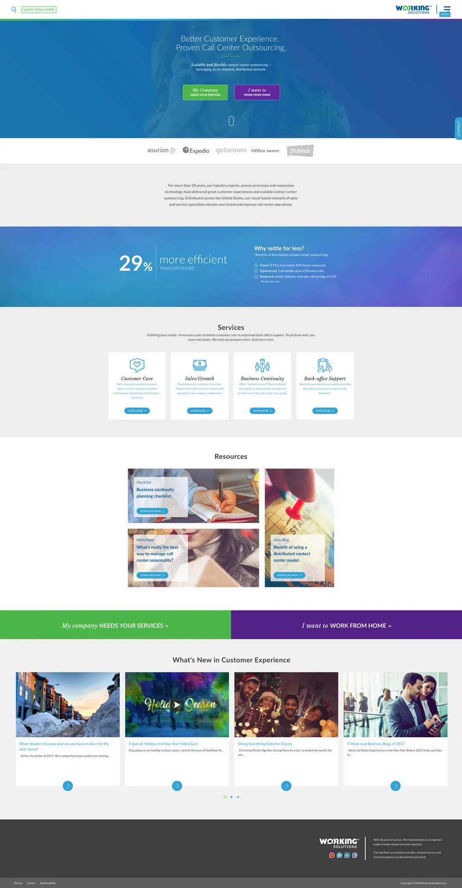
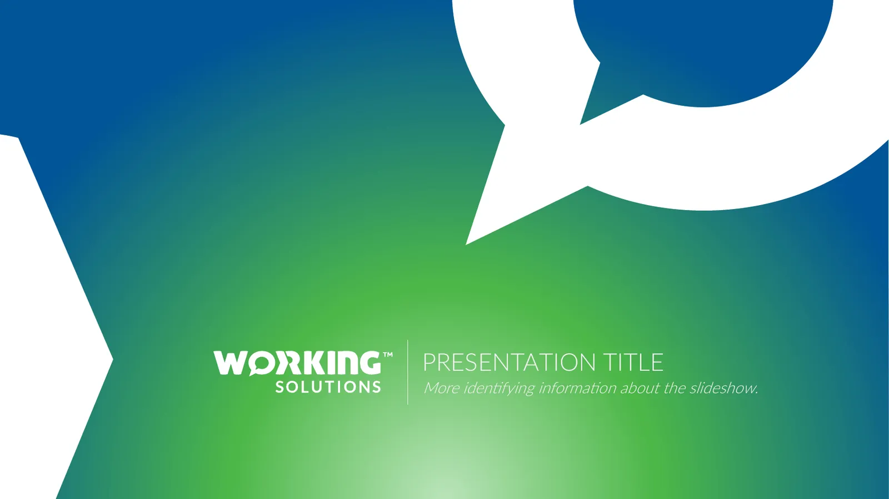

Working Solutions
Moving Communications Forward
Turning a 14-year-old identity into a modern B2B brand, carried through the logo, collateral, website, internal Brand Center and presentation system.
Identity built around an idea
My contribution
Translate the rebrand strategy into a visual identity and carry it across digital, print, presentations and environmental applications.
Key design decision
The conversation concept informed the logotype and a reusable speech-bubble graphic device.
Evidence
2018 REBRAND® 100 Merit recognition for the broader rebrand; my contribution focused on visual and digital design.
A brand built for a different era
For 14 years, Working Solutions led the way in remote contact centers. The identity was built on working "out of the box," and over time it had split into inconsistent sub-brands, print pieces and screens with no shared system.
Click any piece to enlarge
Modernize an established brand
Create one scalable identity for websites, internal applications, presentations, signage, sales collateral, print, documents and sub-brands.
Change behavior, build adoption
Introduce brand standards to a company that wasn't used to formal guidelines, and give people the tools that make following them easy.
From where we work to what we do
The broader rebrand included research, persona development and concept exploration. The insight: the company's value wasn't the remote model, it was communication. My role was turning that strategy into visual and digital design.
Working "out of the box"
Communication, connection and forward movement
Five directions to one mark
Each direction was tested as a full system: one-color, full-color CMYK and PMS, and reversed, at sizes down to one inch. The goal was a mark that works on a business card, a web header and a building wall.
Network
Inspired by "network," "digital," "technology" and "cohesiveness." Fused dots stand for a nationwide network of agents coming together through technology instead of a brick-and-mortar call center.
The approved logotype
The conversation direction won. The "O" becomes a speech bubble and the "R" carries a forward arrow: "Moving Communications Forward," built into the letters themselves.
One identity, many applications
The speech bubble scales up into a bold graphic device. Cropped large on folders, notepads and posters, it gives every piece a recognizable look even before the logo appears.
From brochure site to two-path experience
I designed the new business-to-business website to launch the brand online, and to serve both audiences the company depends on: companies buying services, and agents looking for work-from-home jobs.
- Narrow, fixed-width layout with a long left menu
- Agent recruiting squeezed into a sidebar
- Stock visuals and old brand colors

What the redesign delivered
Brand Center — internal asset site
To make the new standards easy to follow, I designed the interface for the Brand Center, an internal website hosting approved logos, colors, fonts, templates and imagery. It gave the whole company one place to get the brand right.
A welcome and brand introduction give employees a shared starting point.
Visual categories organize the assets people need for everyday work.
Guidelines and templates help teams carry the identity into their own materials.
A PowerPoint master built on the brand
I designed a master template with the brand's colors, Lato type family, imagery direction and graphic elements built in, so any team could produce a clean, professional deck without starting from scratch.

Color
A four-color gradient bar anchors every slide, and each color has a job in charts and diagrams.
Type
The Lato family, from Thin to Black, gives clear hierarchy without extra typefaces.
Imagery
Black-and-white portraits for brand values, warm lifestyle photos for section openers.
Layout
Centered titles on a hairline rule, generous white space and a consistent footer with the logo.